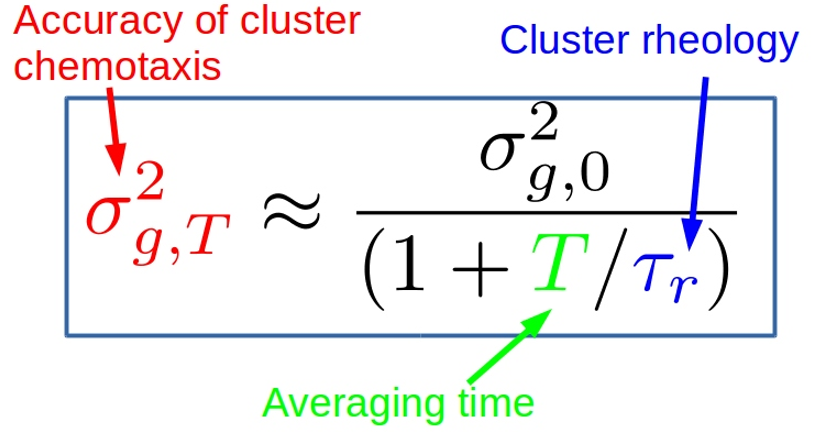
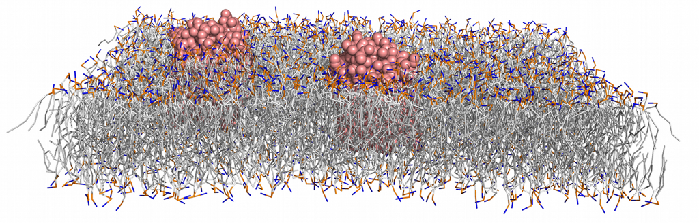

Physics of Cell Motility, Sensing, and Mechanics
Publications, Notes, and Errata
Web interface for finite size corrections in membrane MD
Mathematical Contest in Modeling
Collaborators:
Research Vignettes
|  | When cells cooperate, what physics limits their accuracy?Cells work together to sense the direction of a chemical gradient by communicating with each other, which may be important when clumps of cancer cells metastasize. We are interested in many questions related to this process, which requires the cells to integrate noisy signals in a complex way. We recently found that, because each cell is distinct, these clumps are biased toward cells that are "loud" - sending inappropriately large signals. Cell clusters can reduce this bias by rearranging themselves so loud cells change their locations (video at left). This means the mechanical dynamics of the cluster matter - fluid, squishy clumps of cells with smaller relaxation time τr are better at sensing than solid ones. For details, see [preprint] |
|
|  |
How can fluid mechanics control membrane protein dynamics?We study the role of fluid mechanics in many cell-biological processes, but have a soft spot for the lipid membrane. One classical model of the lipid bilayer membrane is to describe it as a two-dimensional fluid -- surrounded by water on either side. Many predictions of this "Saffman-Delbruck" model have been verified in experiments and in molecular dynamics simulations, but can have striking counter-intuitive consequences -- predicting that even proteins with orders of magnitude different sizes have very similar diffusion coefficients. We recently found another surprise. In a finite system, like a simulation with periodic boundaries, errors can sometimes get larger when you make the system size larger. See papers: [Camley et al. 2015],[Venable et al. 2017] and the online web interface for estimating these correction effects diffusion.lobos.nih.gov |
|

|
How does a cell's shape interact with its internal biochemistry?Cell biology creates a lot of interesting questions where diffusion occurs on a deforming object, which can lead to a lot of surprises! The direction a cell crawls is set by proteins that control the polymerization machinery at the cell front. In a commonly-used model of these "polarity proteins," the cell front will move toward the narrow end of the cell -- if the cell's shape stays constant. However, because the shape changes in response to these proteins, new behaviors show up - including cells that travel in circles. See: [Camley et al. 2017] |
|